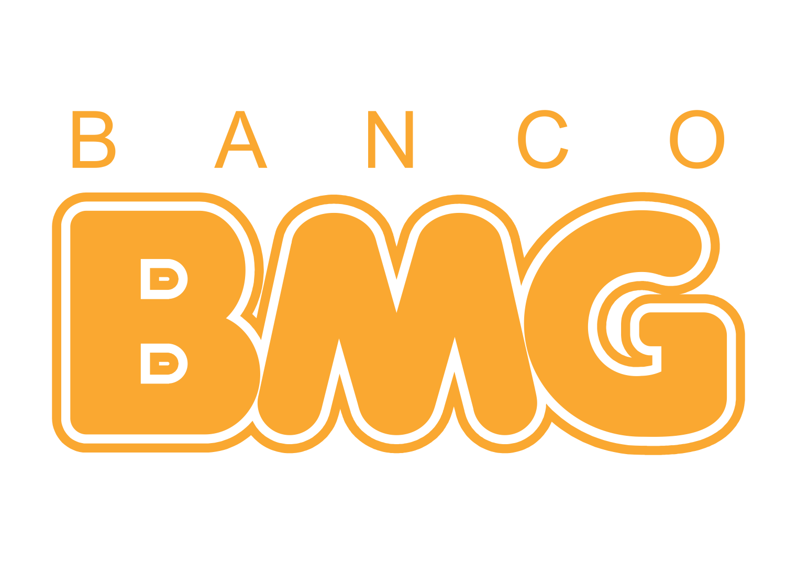
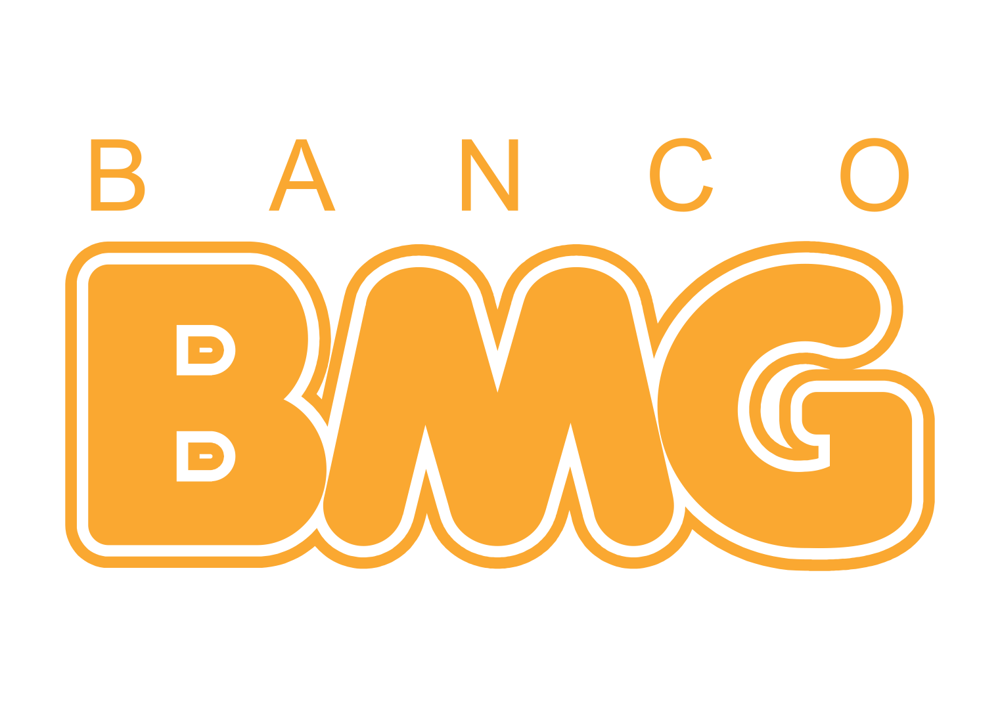

Cadastre-se e concorra a um ingresso para o jogo de Domingo!
Vasco da Gama
 

Todos nós somos o Vasco da Gama!
Clube de Regatas Vasco da Gama é uma entidade sócio-poliesportiva brasileira com sede na cidade do Rio de Janeiro, fundada em 21 de agosto de 1898 por um grupo de remadores. Inspirados nas celebrações do quarto centenário da descoberta do caminho marítimo para as Índias, ocorrida em 1498, batizaram a nova agremiação com o nome do herói português que alcançou tal feito, o navegador Vasco da Gama.
Palmeiras

Titulos Nacionais:
- Campeonatos Brasileiros
- Copas do Brasil
- Campeonatos Paulistas
Titulos Internacionais:
- 1 Copa Libertadores da América
- 1 Copa Mercosul
Verde é a cor da inveja.
Sociedade Esportiva Palmeiras, conhecida popularmente como o Palmeiras, é um clube poliesportivo brasileiro sediado em São Paulo, fundado em 1914, que tem como modalidade esportiva principal o futebol, com um dos times mais vencedores e que está entre as equipes com maior torcida do País.
Internacional


| Uniforme 1 | Uniforme 2 | Uniforme 3 |
|---|---|---|
Ruas de fogo
O Sport Club Internacional surgiu como uma opção para os não-germânicos poderem disputar futebol em Porto Alegre. Foi fundado em 4 de abril de 1909, pelos irmãos José, Henrique Poppe Leão e Luiz Madeira Poppe.